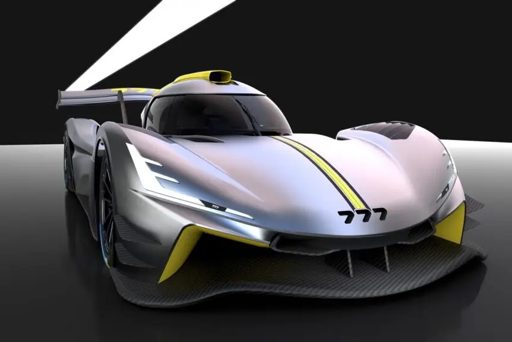
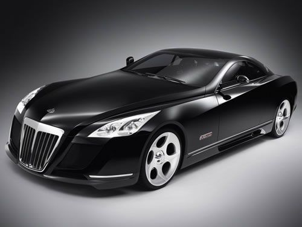
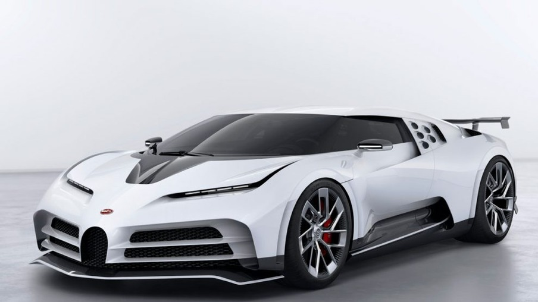
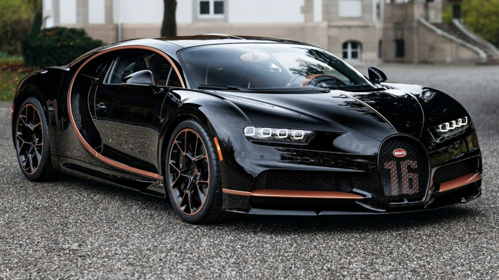

Os carros mais caros do mundo

Quando falamos de supercarros, poucas marcas específicas são lembradas de cara: Bugatti, Ferrari, Koenigsegg, Lamborghini, Pagani e algumas outras. Estas fabricantes se consagraram como o ápice do mundo automotivo, criando veículos exclusivos para os clientes mais ricos do mundo que buscam os carros mais caros, rápidos e belos do planeta.
Mas para criar essa lista dos carros mais caros mundo, vasculhamos entre os preços e encontramos quase 30 carros que custam mais de US$ 1 milhão (R$ 5.099.100). Este grupo inclui conversíveis híbridos da Ferrari, um hipercarro americano e até mesmo um Rolls-Royce único feito para realeza.
Obviamente, esta lista considera o preço dos carros totalmente novos. Veículos raros de leilão podem custar muito mais e o seu valor pode variar bastante. Ainda assim, a lista com os 20 carros mais caros do mundo está bem recheada para te fazer sonhar com o que poderia comprar se ganhasse na Mega Sena acumulada.
777 Hypercar

US$ 7,6 milhões
Projetado pela Dallara, o 777 se destaca pelo desempenho graças a um monocoque de carbono homologado pela FIA, aerodinâmica sofisticada que mantém o carro quase literalmente grudado ao asfalto, com capacidade de atingir 370 quilômetros por hora. O motor é um V8, e pesa 900 quilos, considerado muito leve. As entregas dos carros encomendados começam a partir de 2025, segundo o fabricante.
Mercedes-Maybach Exelero

US$ 8 milhões
A divisão de ultraluxo da Mercedes-Benz, chamada de Maybach, desenvolveu um carro com pneus para atingir mais estabilidade. O Maybach Exelero é um cupê encomendado pela marca de pneus Fulda. A motivação por trás dessa encomenda era conduzir testes e promover uma nova linha de pneus. O Exelero tem 690 cavalos de potência e é um dos carros mais queridinhos de artistas como rapper Jay-Z.
Bugatti Centodieci

US$ 9 milhões
Com origem francesa e abaixo da marca dos US$ 10 milhões, surge o Bugatti Centodieci. Rendendo homenagens ao clássico Bugatti EB110 e construído sobre a base do Bugatti Chiron, o "110" apresenta uma série de destaques, com um impressionante motor W16 de 8 litros que entrega 1.600 cavalos de potência, e velocidade máxima de 379 quilômetros por hora. Vai de zero a 100 quilômetros por hora em 2,4 segundos.
Bugatti Chiron

US$ 10,78 milhões
Ao conquistar o título de carro novo mais caro já vendido em leilão, o Bugatti Chiron Profilée se destaca entre quase todos os carros de luxo disponíveis no mercado. Embora seja uma versão ligeiramente mais atenuada do Pur Sport, orientado para corridas, o Profilée ainda impressiona. Atingindo a marca de 100 quilômetros por hora em aproximadamente 2,3 segundos.